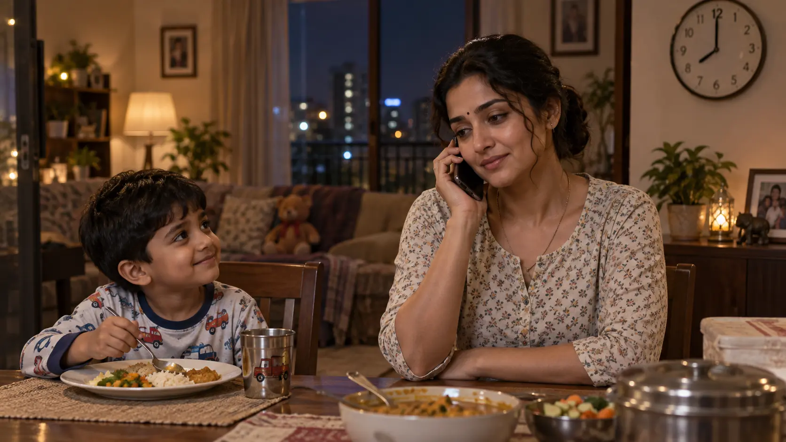

ILLUSTRATED STORY READING · PART 9 · L159–170
Story + Images
Approved local-language story ko complete reading order mein rakha gaya hai. Images exact source beat ke baad aati hain; private thought ko real event ke roop mein confirm nahi kiya gaya.
STORY PASSAGE · L159–164
Raat 8 baje tak John nahi aata. Friday ko woh aam taur par jaldi aakar Dhika ke saath waqt bitaata hai, isliye Dhika wait karti hai. John call karke batata hai ki bada production issue hai aur woh aaj ghar nahi aa paayega. Dhika childish tareeke se complain karti hai—source saaf kehta hai yeh naughty play nahi hai—phir situation samajh leti hai. Woh John ki care, kaam ke prati dedication aur apne liye uske pyaar ko admire karti hai.
IMAGE BEAT · L159–164

GENERATED_PENDING_REVIEW · L159–164 · John is physically absent; phone-call marriage beat.
STORY PASSAGE · L165–168
Dhika Pappu ke saath dinner karke use uske apne room ke bed mein sulaati hai. Apne room mein pajamas aur T-shirt pehenkar leti hai. John ke bina khaali bed par uske random thoughts din ke us moment par laut aate hain jab woh bina dupatta jhuki thi. Woh khud ko stupid kehkar head tap karti hai, phir soch rukti hai: “What if he saw…”
VISUAL STATE · L165–168
Yeh stage self-chiding / awkward embarrassment ka hai. L169 wali private excitement abhi start nahi hui. Chotu physically bedroom mein present nahi hai.
IMAGE BEAT · L165–168
GENERATED_PENDING_REVIEW · L165–168 · awkward/self-chiding recall before the L169 excitement shift.
STORY PASSAGE · L169
Ab thought fear se nahi, excitement se aata hai. Spine mein tingle aur yeh sawaal ki kya Chotu ne uske breast ka kuch hissa dekha—uske lips par bina soche smile aa jaati hai. Woh reality mein lautkar thought ko push away karti hai aur so jaati hai.
VISUAL STATE · L169
Bedroom Dhika actual present state hai. Upar ke three soft thought clouds uski imagined possibilities hain, confirmed flashback nahi. Cloud imagery Part 8 ke bend ko subjective memory/fantasy form mein reference karti hai; exactly Chotu ne kya dekha source confirm nahi karta.
IMAGE BEAT · L169
LOCKED_APPROVED_IMAGE · user-approved replacement · L169 · three-cloud subjective imagination; no cloud is confirmed reality.
STORY PASSAGE · L170
Narrator uski limited sexual exposure establish karta hai: porn ya sex talk nahi, shaadi se pehle kisi ko nahi dekha; bas movies ke mild naughty scenes.
NO_IMAGE_NEEDED · L170 is narrator/background context rather than a separate live visual beat.
READER INTERPRETATION / SPECULATION · PART 9 ONLY
Reader Analysis · Desire, Hooks & Possibilities
READER INTERPRETATION / SPECULATION. Yeh canon nahi hai jab tak kahani aage chal kar khud establish na kare. Yahan sirf Part 9 · L159–170 ko reader ki nazar se padha gaya hai.
A. Reader Takeaway
Part 9 do alag cheezein ek saath establish karta hai. Pehli: John aur Dhika ka marriage warm aur caring hai; John work emergency ki wajah se ghar nahi aa raha, Dhika childish tareeke se complain karti hai but situation samajhti hai aur uski work ethic/love admire karti hai. Dusri: raat ko John ke bina bed par Dhika ka mind Part 8 ke bend/visibility moment par wapas jaata hai. Pehle woh khud ko stupid bolti hai, phir thought fear se excitement mein shift hota hai—“kya usne mere breast ka kuch hissa dekha?”—spine mein tingle hota hai aur lips par unconscious smile aa jaati hai. Phir woh khud ko reality mein laakar thought push kar deti hai.
B. Sexual Subtext / Attraction Read
- Confirmed sexualized thought: L169 mein Dhika khud sochti hai ki kya Chotu ne uske breast ka kuch hissa dekha. Yeh direct RAW thought hai, vague “visibility concern” nahi.
- Emotional/body response: source specifically kehta hai thought fear se nahi, excitement se aaya; usse spine mein tingle feel hota hai aur unconscious smile aati hai.
- Action vs thought: Part 9 mein Chotu present nahi hai aur Dhika koi outward sexual action nahi karti. Yeh private thought/self-discovery beat hai.
- Knowledge: Dhika ab bhi sure nahi ki Chotu ne Part 8 mein exactly kya dekha. “What if” uncertainty intact hai.
- Sexual-experience baseline: L170 narrator uski limited prior sexual exposure explicitly establish karta hai—porn nahi, sex talk nahi, marriage se pehle kisi ko nahi dekha; mild movie scenes tak experience.
C. Sexual Boundaries & Tension
P9 ka erotic tension outward encounter se nahi, Dhika ke andar pehli baar apni reaction notice karne se banta hai. Important boundary: being-seen possibility ko privately exciting paana ≠ Chotu ko permission dena, deliberate exposure, affair, ya future sexual consent. John ki absence bhi marital rejection nahi; source marriage ko caring rakhta hai. Isliye curiosity ko “John missing tha isliye Dhika dissatisfied thi” mein rewrite karna source ke against hoga.
D. Open Erotic Hooks / Reader Curiosity
- Kya yeh breast-visibility thought future mein phir return karega, ya Dhika genuinely suppress kar degi? Evidence: L166–170.
- Kya next time Chotu saamne aayega toh Dhika Part 8 moment ko consciously ya unconsciously yaad karegi? Evidence: private memory now emotionally charged.
- Kya Dhika future mein apne “fear + excitement” reaction ko samajhne lagegi, ya usse innocence/embarrassment ke andar push karti rahegi? Evidence: L169–170.
- Kya exact Part 8 visibility kabhi confirm hogi? Still OPEN.
- Kya John kabhi Dhika ke is private self-secret ke baare mein jaane bina marriage baseline normal continue karega? P9 tak John unaware.
E. Closed / Resolved Hooks
Part 8 ka hook “Dhika is experience ko sirf fear/awkwardness maanegi ya isme excitement bhi hai?” Part 9 mein RESOLVED: excitement definitely exists. Lekin “kya Chotu ne breast/cleavage/bra actually dekha?” ab bhi unresolved hai. Marriage-conflict hook bhi close hai: no conflict; John ki absence work issue hai.
F. Future Character Possibilities
NON-CANON INFERENCE · source-grounded suggestions:
- Dhika — private curiosity: ab source confirm kar chuka hai ki possibility of being seen usse excite kar sakti hai. Future mein yeh thought repeat ho sakta hai even if woh outwardly normal rahe.
- Dhika — self-policing: woh immediately thought push away karti hai, so curiosity ke saath strong internal restraint bhi active hai.
- Dhika ↔ Chotu: next live interaction outwardly same Didi/Chotu frame mein ho sakta hai, while Dhika internally P8/P9 memory carry kare.
- John ↔ Dhika: caring marriage intact hai. Future curiosity ko marital dissatisfaction assume karna source-supported nahi hoga unless later RAW changes it.
- Dhika ka sexual self-awareness: limited prior exposure baseline ke against yeh moment ek new internal discovery ban sakta hai—without automatically becoming behavior.
G. Wildest Reader Imagination
NON-CANON READER SPECULATION · Evidence base: Episode 1 · Part 9 · L166–170.
- Reader imagine kar sakta hai ki next Chotu meeting mein Dhika outwardly bilkul normal rahe, lekin uska mind ek pal ke liye “kya usne dekha tha?” thought par wapas chala jaaye.
- Reader yeh bhi imagine kar sakta hai ki compliment, gaze ya clothing-related koi future neutral beat us P9 excitement ko phir activate kare—without Dhika deliberately inviting anything.
- Longer route mein Dhika apni hi reaction se curious ho sakti hai: use zyada disturb yeh kare ki Chotu ne kya dekha, ya yeh ki “what if he saw” thought ne usse smile kyun karaya.
Boundary: affair, deliberate exposure, reciprocity, sexual invitation ya Chotu ke confirmed view ka koi canon proof Part 9 mein nahi hai.
CUMULATIVE · SOURCE-LOCKED · THROUGH PART 9
Character Evolution
Original RAW ko primary reference maana gaya hai. Baseline purani/stable history hai; WHAT CHANGED sirf genuine before → after transition hai. Private thought ko outward action, permission ya reciprocity mein upgrade nahi kiya gaya.
Dhika
A. BASELINE
Dhika 29 saal ki kind-hearted Physics teacher, John ki wife aur Pappu ki mother hai. Shy/thodi innocent lekin attention-aware hai aur presentation consciously manage karti hai. P2 mein Bantu ke daily “pretty” compliment par discomfort → liking → secret expectation hua. P4 mein Bobby ki visible white hip/skin, apple-like ass/gaand gaze aur hip/stomach/bare-hip contact ke dauran embarrassment, chill/sihran aur shyness source-supported hain. P5 mein Uncle ke P3 bra trace ko accidental slip/fall maan kar suspect nahi karti. P8 mein Chotu ke possible inside-dress view ko lekar fear + excitement + confusion feel karti hai, phir family-problem explanation se scene shelve karti hai. L170 baseline expand karta hai: narrator ke mutabik Dhika porn nahi dekhti, sex talk nahi ki, shaadi se pehle kisi ko nahi dekha; uski max prior exposure mild naughty movie scenes thi.
B. WHAT CHANGED
Part 9 · L166–169
BEFORE: P8 ke immediate aftermath mein possible exposure ko lekar Dhika frightened bhi thi aur excited bhi, phir usne thought ko rationalize/shelve kar diya tha.
CHANGE: John ke bina bed par L166–168 mein woh bina dupatta bend karne ka moment yaad karti hai, khud ko “stupid” bolkar head hit karti hai aur “what if he saw…” par rukti hai. L169 mein RAW explicitly kehta hai ki strange thought “not out of fear but out of excitement” aata hai. Uski spine mein tingle hoti hai; woh sochti hai “Did he see parts of my breast”; lips par unconscious smile aati hai. Phir reality mein lautkar thought ko push out karke so jaati hai.
NOW: P8 ke mixed fear+excitement se Dhika ka private response momentarily excitement-led curiosity tak progress hua hai. Woh possible breast visibility ke thought par tingle + unconscious smile experience karti hai, lekin consciously thought suppress karti hai. Yeh internal state hai—Chotu ko invitation, deliberate display, affair ya permission nahi.
INFERENCE — EROTIC / SEXUAL AROUSAL: L169 ka combination—not out of fear but out of excitement + “Did he see parts of my breast” + spine tingle + unconscious smile—strongly indicate karta hai ki possible being-seen thought Dhika ko erotic/sexual pleasure-arousal de raha hai. Exact genital response P9 mein source nahi deta; woh clearer marker P12 mein aata hai.
WHY — SOURCE-STATED: L169 seedha excitement ko fear se alag karta hai aur breast-visibility thought ke saath tingle/smile link karta hai.
C. FUTURE POSSIBILITY — NON-CANON
Dhika ne thought suppress kiya hai, resolve nahi. Later source agar being-seen possibility ya Chotu interaction ko revisit karta hai, P9 ka private excitement relevant ho sakta hai; abhi outward behaviour change establish nahi.
John
A. BASELINE
Dhika ka husband; narrator L161 mein use sweet and caring batata hai. L159/L164 se Friday ko usually thoda jaldi aakar Dhika ke saath time spend karna, job ko seriously lena aur Dhika ka uske work/love balance ko admire karna stable marriage history ke roop mein expand hota hai.
B. WHAT CHANGED
Part 9: No actual character-state change. Huge production issue ki wajah se overnight office stay circumstantial hai; source rejection/conflict establish nahi karta. Woh sorry bolta hai, “Baby/my dear” tone rakhta hai, next morning aane ki baat karta hai aur kisses kehkar call end karta hai.
C. FUTURE POSSIBILITY — NON-CANON
Work issue temporary absence hai; marriage conflict infer nahi kiya jayega.
Uncle
A. BASELINE
Early-60s retired military veteran; Aunty ke husband aur public trusted elder. P1 concealed attraction + habitual ogling. P3 bra fiddle karte hue Dhika ke do milky breasts ko little cups mein bhara hua, bulging breasts ke top ko tiny fingers se caress hota imagine karta hai, phir used bra ke andar sniff karta hai. P5 trace Dhika dekhkar bhi misread karti hai.
B. WHAT CHANGED
Part 9: No actual character-state change; Uncle absent.
C. FUTURE POSSIBILITY — NON-CANON
Aunty
A. BASELINE
Early-60s maternal-neighbour figure, Uncle ki wife aur trusted caregiver.
B. WHAT CHANGED
Part 9: No actual character-state change.
C. FUTURE POSSIBILITY — NON-CANON
Bantu
A. BASELINE
Verified adult student, P4 context mein 18. P4 false bike/petrol pretext, Dhika ki beautiful apple-like ass/gaand gaze, close-seat desire aur Bobby seat frustration established.
B. WHAT CHANGED
Part 9: No actual character-state change.
C. FUTURE POSSIBILITY — NON-CANON
Bobby
A. BASELINE
Verified adult twin. P4 visible white hip/skin + apple-like ass/gaand gaze, close-seat desire, tight hip/stomach hold, finger tapping aur bare hip rubbing contact established; exact later hand/finger motive unstated.
B. WHAT CHANGED
Part 9: No actual character-state change.
C. FUTURE POSSIBILITY — NON-CANON
Bindu Maami
A. BASELINE
53-year-old nearby departmental-store owner; practical Dhika store/payment relationship aur Chotu work connection established.
B. WHAT CHANGED
Part 9: No actual character-state change.
C. FUTURE POSSIBILITY — NON-CANON
Chotu / Babu
A. BASELINE
19-year-old adult delivery worker; almost-one-year Didi/brother-like familiarity. P8 mein Dhika ke bend ke immediately baad laugh vanish, deep-thought/dream-state, delayed response, evasion aur payment liye bina abrupt exit documented hai; exact view (cleavage / bra / something more) aur exact sexual thought/motive source confirm nahi karta.
B. WHAT CHANGED
Part 9: No actual Chotu character-state change because Chotu present nahi. Dhika ka private memory/excitement Chotu ke internal state ka evidence nahi.
C. FUTURE POSSIBILITY — NON-CANON
P8 ka exact Chotu-side meaning unresolved hai.
CUMULATIVE · SOURCE-LOCKED · THROUGH PART 9
Relationship Progression
P9 ka major relationship delta outward interaction nahi, Dhika-side private emotional progression hai. Routine marriage/care events ko fake change nahi maana gaya.
Dhika ↔ John
A. BASELINE RELATIONSHIP
Warm married spouse/family bond. L159–164 baseline expand karta hai: Friday nights par John usually jaldi aakar Dhika ke saath time spend karne ki koshish karta hai; woh sweet/caring hai; Dhika uski job dedication aur apne liye love ko admire karti hai.
B. NORMAL / NON-SEXUAL INTERACTION HISTORY
Part 9: John production issue ki wajah se overnight office stay batata hai; Dhika childish tareeke se complain karti hai—RAW explicitly says childish play, not naughty play—phir situation samajh leti hai. John affectionate language aur kisses ke saath call end karta hai.
F. CURRENT FEELINGS / EMOTIONS
Dhika → John: understanding, affection, admiration; bed mein uski absence notice karti hai.
John → Dhika: sweet/caring affection source-stated; work issue ki wajah se absent.
G. WHAT CHANGED IN THIS RELATIONSHIP
Part 9: No actual relationship-state change. Temporary work absence marriage conflict/rejection nahi; existing affectionate baseline reaffirm hota hai.
H. FUTURE POSSIBILITY — NON-CANON
Work issue temporary hai; emotional rupture infer nahi.
Dhika ↔ Uncle
A. BASELINE RELATIONSHIP
Public trusted elder equation; hidden Uncle-side attraction/ogling and P3 covert bra incident.
D. UNCLE → DHIKA EROTIC / SEXUAL HISTORY
P1 concealed attraction/habitual ogling. P3 milky breasts / little cups / bulging breasts fantasy + used bra sniffing.
F. CURRENT FEELINGS / EMOTIONS
Dhika conscious trust intact; Uncle-side secret unchanged.
G. WHAT CHANGED IN THIS RELATIONSHIP
Part 9: No new relationship-state change.
Dhika ↔ Bantu
A. BASELINE RELATIONSHIP
Favourite teacher/student familiarity; P2 Dhika discomfort → liking → secret expectation. P4 Bantu body gaze/proximity route established.
D. BANTU → DHIKA EROTIC / SEXUAL HISTORY
P4 Dhika ki beautiful apple-like ass/gaand gaze + ride/close-seat desire.
F. CURRENT FEELINGS / EMOTIONS
Dhika liked/expected compliments; Bantu appearance praise/body gaze/proximity desire.
G. WHAT CHANGED IN THIS RELATIONSHIP
P5–P9: HOLD.
Dhika ↔ Bobby
A. BASELINE RELATIONSHIP
Favourite teacher/student bond + P4 visibility/contact history.
C. DHIKA → BOBBY EROTIC / SEXUAL HISTORY
P4 embarrassment/pinkness + bare hip contact par chill/sihran/shyness; source romance/desire establish nahi karta.
D. BOBBY → DHIKA EROTIC / SEXUAL HISTORY
P4 visible white hip/skin, apple-like ass/gaand gaze, close-seat desire, tight hip/stomach hold, finger tapping, bare-hip rubbing contact.
G. WHAT CHANGED IN THIS RELATIONSHIP
P5–P9: HOLD.
Bantu ↔ Bobby
A. BASELINE RELATIONSHIP
Verified-adult twins; P4 Dhika-related close-seat competition + withheld ride-detail asymmetry.
G. WHAT CHANGED IN THIS RELATIONSHIP
P5–P9: No new change.
Dhika ↔ Bindu Maami
A. BASELINE RELATIONSHIP
Practical customer/storekeeper-neighbour connection.
G. WHAT CHANGED IN THIS RELATIONSHIP
Part 9: No change.
Dhika ↔ Chotu / Babu
A. BASELINE RELATIONSHIP
Didi/brother-like trusted familiarity. P8 mein first ambiguous sexualized visibility incident: Dhika possible cleavage / bra / something more visibility suspect karti hai, fear + excitement feel karti hai; Chotu stunned/silent/evasive ho kar payment liye bina nikalta hai. Exact view/motive unresolved.
B. NORMAL / NON-SEXUAL INTERACTION HISTORY
P6 delivery/history, P7 noodles/juice/Pappu play; P8 ordinary juice handoff se ambiguous event start.
C. DHIKA → CHOTU EROTIC / SEXUAL HISTORY
Part 8: possible exposure par fear + excitement/confusion.
Part 9 · L166–169: Chotu absent hote hue Dhika private memory revisit karti hai. RAW explicitly says thought not out of fear but out of excitement aata hai; “Did he see parts of my breast” soch par spine tingle + unconscious smile aata hai; phir thought suppress hota hai.
INFERENCE: Yeh generic curiosity se stronger hai—possible breast visibility / being-seen thought ke saath erotic/sexual arousal or pleasure strongly implied hai. Exact genital anatomy/response P9 mein stated nahi.
D. CHOTU → DHIKA EROTIC / SEXUAL HISTORY
P8 exact view/motive unresolved. P9 koi naya Chotu evidence nahi deta.
E. ACTUAL EROTIC / SEXUAL ENCOUNTERS
P8 ambiguous visibility event confirmed shared erotic encounter nahi tha; P9 mein koi interaction nahi.
F. CURRENT FEELINGS / EMOTIONS
Dhika → Chotu: outward Didi/brother-like frame formally unchanged; private being-seen possibility ab excitement-led curiosity, tingle aur unconscious smile generate kar chuki hai. Inference: this is emerging erotic/sexual arousal at the possibility of being seen, not yet an outward invitation or stated crush.
Chotu → Dhika: exact P8 feeling/view still unknown.
G. WHAT CHANGED IN THIS RELATIONSHIP
BEFORE: P8 mixed fear + excitement ke baad Dhika scene ko family-problem explanation se shelve karti hai.
CHANGE: P9 solitude mein possible breast visibility memory wapas aati hai; fear ke bina excitement, spine tingle aur unconscious smile source-stated hain.
NOW: External relationship unchanged hai, but Dhika-side private state mixed uncertainty se clearer excitement/curiosity tak progress hua hai. No outward invitation/action/permission.
WHY — SOURCE-STATED: L169 explicitly “not out of fear but out of excitement” bolta hai.
H. FUTURE POSSIBILITY — NON-CANON
Private curiosity suppress hui hai; later interaction mein recur hoti hai ya nahi, source decide karega.
PART 9 ONLY · STORY CRAFT
Storytelling & Authoring Notes
Part 9 external action ko slow karke Dhika ke private internal shift ko foreground karta hai.
Marriage stability first
John call se scene deliberately establish karta hai ki marriage caring hai aur absence work-driven hai. Yeh Dhika ki later curiosity ko marital dissatisfaction se separate rakhta hai.
Fear → excitement transition
Dhika same P8 memory ko pehle self-reproach ke saath yaad karti hai, phir thought excitement mein turn hota hai. Tingle + unconscious smile actual change markers hain.
Thought, not action
Scene ki power isliye hai kyunki koi outward move nahi hota. Dhika khud apni thought se surprise hoti hai aur use push away kar deti hai.
Limited sexual-exposure baseline
L170 narrator explanation future interpretation ke liye important hai: Dhika sexualized attention ko experienced/fluent frame se process nahi karti.
Authoring Note
P9 ke baad preserve karo: John unaware, Chotu absent/unaware, exact P8 visibility unresolved, Dhika privately excited by the possibility and immediately self-suppresses. Is private thought ko retroactive consent/action mat banao.